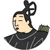

歌人に会える百人一首藤原基俊

意味
約束してくださった「さしも草の」の歌の露のようなありがたい言葉を命のように大切にしていたのに。ああ…今年の秋もむなしく過ぎていくようだ。
解説
この歌は、作者・藤原基俊が息子の出世を願う中で詠んだ歌とされています。基俊は、僧侶であった息子の昇進を藤原忠通に依頼し、その実現を期待していました。しかし願いはかなわず、「約束の言葉を頼みに待っていたのに、また秋が過ぎてしまった」という思いを歌に託したと伝えられます。そこには、期待が裏切られた悲しみや失望がにじんでいるようにも感じられます。
基俊は藤原道長の曾孫という名門の出身でしたが、官人としては必ずしも恵まれた経歴ではありませんでした。一方で、院政期の歌壇では伝統的な和歌を重んじる有力歌人として活躍します。息子の将来を案じて奔走した逸話からは、歌人としての誇りだけでなく、家族を思う情の深さもうかがえます。
詳しくはこちら